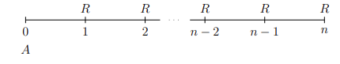

Tópicos Actuariales con R
Anualidades
Si te dedicas a trabajar en el ambito de Ciencias Actuariales o Matemáticas Financiera, en este post, te comparto una de las librerias que fue publicada recientemente por Giorgio Alfredo Spedicato, la cual te ayudará mucho si quieres introducir tus computos o estimaciones al ecosistema de R y RStudio. Su autor se otorgo el nombre de lifecontingencies. A continuación conozcamos un poco de ella.
Librería lifecontingencies
En la actualidad el conocimiento sobre el uso de R, es muy demandado en los profesionales que requieren las empresas, siendo este un software libre especializado en estadística, con gran capacidad gracias al uso de complementos adicionalesm llamadas librerías, que al ser instaladas potencian las capacidades para desarrollar procedimientos especializados y que hacen de R Project un potente programa para el uso de diferentes ramas de la ciencia actuarial.
Como ya he mencionado es esencial la descarga de librerías que incrementan las funciones de R, en el caso de Cálculo Actuarial, la librería utilizada se llama lifecontingencies(Spedicato 2013).
Gracias a lo investigado por Giorgio Spedicato creador de la librería lifecontingencies y presentado en el paper “The lifecontingencies Package: Performing financial and Actuarial Mathematics Calculations in R” (Spedicato, 2013, p.1-2), encontramos lo siguiente.
El entorno de programación estadística en R se ha convertido en el principal software de referencia para académicos, incluso en los negocios, R ahora se considera una alternativa válida a los paquetes estadísticos comerciales más importantes como por ejemplo:
SAS (SAS Institute Inc., 2011)
MATLA (The MathWorks, Inc., 2011)
SPSS (IBM Corp, 2012)
Algunos paquetes para aplicaciones actuariales se han desarrollado dentro de R. Sin embargo, la mayoría de ellos se centran principalmente en seguros de no vida, los principales son:
actuar(Dutang, Goulet, y Pigeon, 2008): este paquete representa el lado computacional de la metodología actuarial clásica sobre la distribución de pérdidas.ChainLadder(Gesmann y Zhang, 2011): proporciona funciones que son capaces de estimar reservas de pérdidas para el seguro de no vida y de modelos lineales generalizados (GLM), ampliamente utilizados en las decisiones para la tasa del seguro, por funciones agrupadas dentro de la base de distribuciones deR.
El trabajo actuarial sobre seguros de vida se ocupa principalmente de datos demográficos y financieros.
El CRAN enumera varios paquetes especializados para el análisis financiero entre los que encontramos YielCurve (Guirreri, 2010) y termstrc (Ferstl y Hayden, 2010) los cuales son capaces de realizar modelos financieros con tasas de interés. Entre los pocos paquetes que manejan datos demográficos, estan demografy (Hyndman, Booth, Ticke y Maindonald, 2011) y LifeTables (Riffe, 2011) pueden utilizarse para gestionar las proyecciones demográficas.
Por otra parte, muchos paquetes de software comerciales adaptados especificamente para el análisis de los seguros de vida ya están disponibles son: MoSes (Tower Watson,2011) y Prophet (SunGard, 2012) son actualmente los principales paquetes de software actuarial para el modelado de los seguros de vida.
El paquete lifecontingencies aparece como el primer paquete de R, para realizar cálculos de matemáticas contingentes de vida. Apunta a representar al compañero computacional para resoler conceptos teóricos expuestos en libros de texto como el clásico Bowser (Bowers, Jones, Gerber, Nesbitt, y Hickman, 1997), para la evaluación de matemáticas actuariales y Broverman (Broverman, 2008) para las matemáticas financieras.
El uso de la librería lifecontingencies en este post, se utilizara para temas planteados con contingencias relacionadas a una sola persona, sin embargo, el lector ya con una idea más clara y con conocimientos sobre esta librería, podrá abordar las funciones para resolver problemas de contingencias para el caso de N personas los cuales posiblemente la oborde en otro post sobre Calculo Actuarial Avanzado.
Nota: En todo problema que realizaremos es muy importante que realices tus propios calculos para que compruebes cómo se llegó al resultado.
Anualidades
Una anualidad es una serie de pagos iguales realizados en intervalos de tiempo regulares, durante un tiempo determinado. A los Intervalos de tiempo iguales entre pago y pago se les llama periodo de pago y al periodo de tiempo específico durante el cual se realizan los pagos se le conoce como plazo o término de la anualidad.
Tipos de Anualidades
Los factores que intervienen en las anualidades y su forma de pago hacen que se puedan clasificar de diferente forma, sin embargo, eso no significa que sean mutuamente excluyentes. Las anualidades se pueden clasificar bajo cuatro criterios importantes; tiempo, intereses, pago o iniciación.
Anualidades Vencidas
Una anualidad vencida es una serie de pagos iguales realizados al final de cada periodo de pago, un ejemplo de ellas es cuando hacemos el pago mensual de alguna tarjeta de crédito o el pago mensual de una cuenta de ahorro.
Valor Presente de una anualidad Vencida
A continuación se muestra la fórmula para el cálculo del valor presente de una anualidad vencida.
Se supone una anualidad vencidad donde \(R\) es el pago de la anualidad al final de cada periodo de pago en un plazo de \(n\) periodos.

la fecha focal se localiza en el momento actual, y la letra \(A\) representa el valor actual de la anualidad. La expresión es la siguiente:
\[A = R(1+i)^{-1} + R(1+i)^{-2} + . . . + R(1+i)^{-(n-2)} + R(1+i)^{-(n-1)} + R(1+i)^{-n}\]
haciendo \((1+i)^{-1} = v\)
\[ \begin{eqnarray} A &=& Rv + Rv^2 + . . . + R^{n-2} + Rv^{n-1} + Rv^n\\[0.2cm] A &=& R(v + v^2 + . . . + v^{n-2} + v^{n-1} + v^n) \end{eqnarray} \]
Claramente es una suma de progresión geométrica decreciente, entonces
\[ A = R\frac{v(1-v^n)}{1-v} \]
El denominador es igual a:
\[ 1 - v = 1 - \frac{1}{1+i} = \frac{1+i-1}{1+i} = i\frac{1}{1+i} = iv \]
por tanto,
\[ A = R\frac{1-(1+i)^{-n}}{i} \]